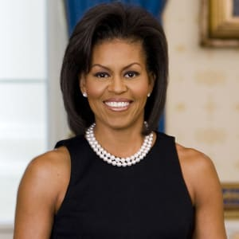

Michelle LaVaughn Robinson Obama
The First Black First lady of the United states Of America

Here's a timeline of Mitchelle Obama's early life and achievement.
- January 17, 1964 - Born in Chicago,illinios, to mama and papa Fraser Robinson.
- 1988 - Graduated law school and worked as an associate of the chicago Branch Firm.
- October 3,1992 - Married Barrack Hussein Obama at the Trinity United Church of Christ
- 1993- Left corporate law to pursue a career in public service and also became the executive director of thr chicago office of Public allies.
- 1996 - Michelle joined the university of Chicagoas an associate dean of student services.
- 2002 - She worked for the university of chicago hospital as executive director of community relations and external affairs.
- 2004 - Michelle first caught the eye of the national audience while at her husbands's side when he delivered the high-profile speech at the democractic National convention, as he was later as a senator that November.
- January 20, 2009 - Michelle was inaugurated as the 44th first lady of the United states.
- November 6, 2012 - Barrack was re-elected.
While her husband sought reelection in 2012, facing a challenging race against republica presidental norminee Mitt Romney, Michelle dilligently campaigned on his behalf, travelling the country, giving talks and making public appearances.

Throughout her career, Michelle has given a number of powerful speeches.A few of the most notable include:
- Democratic National convention, September
- Obama Foundation Summit